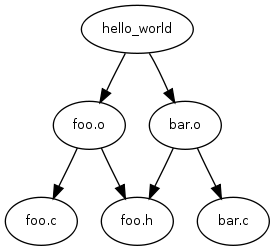
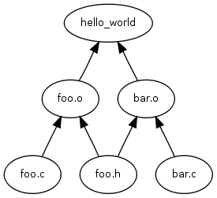

Tup is a file-based build system for Linux, OSX, and Windows. It inputs a list of file changes and a directed acyclic graph (DAG), then processes the DAG to execute the appropriate commands required to update dependent files. Updates are performed with very little overhead since tup implements powerful build algorithms to avoid doing unnecessary work. This means you can stay focused on your project rather than on your build system.
$ apt-get install pkg-config libfuse-dev fuse $ git clone git://github.com/gittup/tup.git $ cd tup tup$ ./bootstrap.sh tup$ man ./tup.1
If you don't want to install tup from the git tree, you can use the unofficial tup PPA repository that works for Debian-based distributions (e.g. Ubuntu 10.04+).
sudo apt-add-repository 'deb http://ppa.launchpad.net/anatol/tup/ubuntu precise main' sudo apt-get update sudo apt-get install tup
Tup requires a FUSE implementation on macOS. FUSE-T is recommended — it runs entirely in user space (no kernel extension needed) and is API-compatible with macFUSE.
Install FUSE-T and build dependencies:
brew tap macos-fuse-t/homebrew-cask brew install fuse-t brew install pkg-config pcre2 cmake
Build the patched libfuse (fixes an unmount teardown issue in FUSE-T):
git clone https://github.com/petemoore/libfuse.git --branch fix/recv-eof-on-unmount --depth 1
cd libfuse && mkdir build && cd build && cmake .. && make
install_name_tool -id /usr/local/lib/libfuse-t.dylib lib/libfuse-t.dylib
sudo cp lib/libfuse-t.dylib /usr/local/lib/libfuse-t.dylib
sudo cp lib/libfuse-t.a /usr/local/lib/libfuse-t.a
sudo mkdir -p /usr/local/include/fuse
sudo ln -sf /Library/Frameworks/fuse_t.framework/Headers/* /usr/local/include/fuse/
sudo mkdir -p /usr/local/lib/pkgconfig
sudo tee /usr/local/lib/pkgconfig/fuse.pc > /dev/null << 'EOF'
prefix=/usr/local
exec_prefix=${prefix}
libdir=${exec_prefix}/lib
includedir=${prefix}/include
Name: fuse
Description: FUSE-T libfuse
Version: 2.9.9
Libs: -L${libdir} -lfuse-t -pthread
Cflags: -I${includedir}/fuse -D_FILE_OFFSET_BITS=64
EOF
cd ../..
Build tup:
git clone https://github.com/gittup/tup.git cd tup ./bootstrap.sh
Alternatively, if you already have macFUSE installed (requires enabling the kernel extension in System Settings > Privacy & Security), tup will use it automatically without the patched libfuse steps above.
If you use MacPorts:
sudo port install tup
You can use tup anywhere you would use another build system (like make, or any of its derivatives). One reason you would want to use tup is if you like to update things very quickly. For example, if you typically execute a build in a subdirectory because it takes too long to figure out what to do when you execute the build from the top, you might want to look into tup. Unfortunately, tup is so fast that your chair mounted jousting might suffer. I apologize in advance if someone besmirches your honor and you are unable to properly defend yourself as a result.
Nothing much, just writing some web pages. What's up with you?
What this means is:
In a typical build system, the dependency arrows go down. Although this is the way they would naturally go due to gravity, it is unfortunately also where the enemy's gate is. This makes it very inefficient and unfriendly. In tup, the arrows go up. This is obviously true because it rhymes. See how the dependencies differ in make and tup:
Make  |
Tup  |
See the difference? The arrows go up. This makes it very fast. In fact, in at least one case, tup is optimal. See the Build System Rules and Algorithms (PDF) paper for more detailed information.